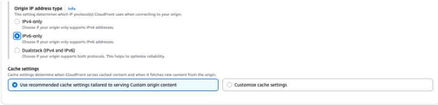
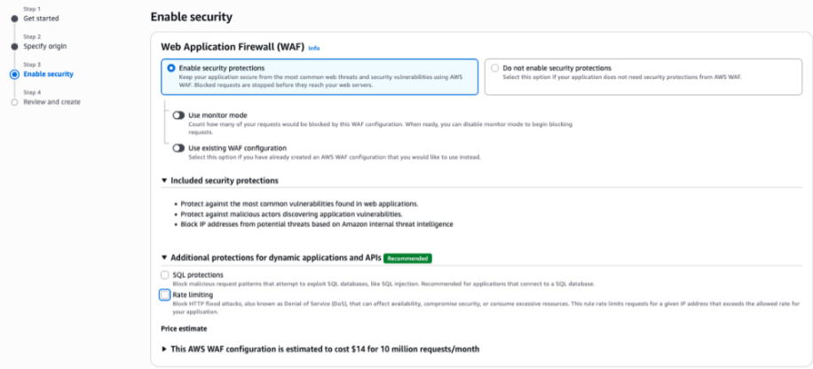
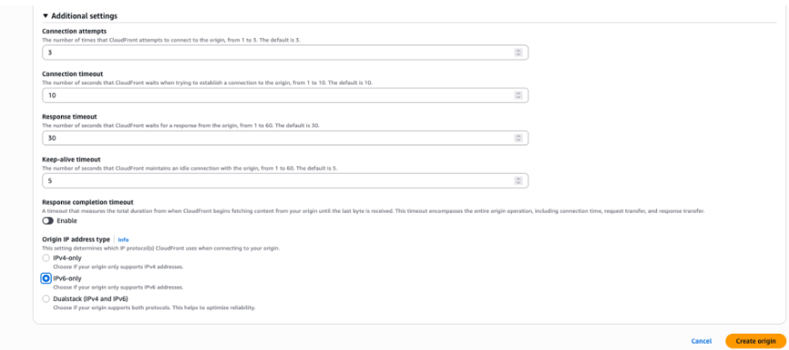
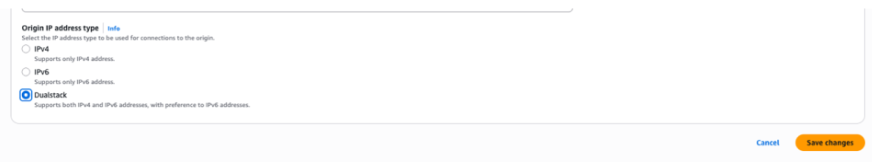
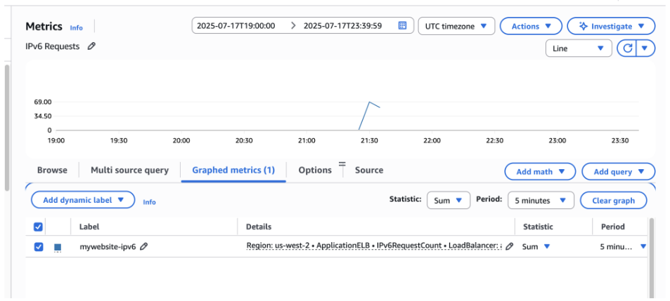

Blog 3
Networking & Content Delivery
Amazon CloudFront Now Supports IPv6 Origins for End-to-End IPv6 Delivery
Written by Sagar Desarda and Ravi Avula on 04 SEP 2025 in Best Practices, Networking & Content Delivery, Technical How-To Permalink Share
IPv6 adoption continues to accelerate worldwide as organizations move beyond the limitations of IPv4 address space. At Amazon Web Services (AWS), we have long supported IPv6 from end users to the Amazon CloudFront network, helping end users reduce latency, improve performance, and expand reach across modern mobile networks. Today, we are excited to take another step forward. Starting today, CloudFront now supports IPv6 connectivity from edge to origin—enabling a truly end-to-end IPv6 delivery path. This allows end users to use CloudFront as a dual-stack IPv6 and IPv4 Internet gateway for their web applications to provide content acceleration.
Why is this important?
IPv6 is the foundational transport protocol for most modern mobile networks and an increasing share of broadband traffic. Enabling IPv6 to the origin allows you to maintain consistency of protocol across the delivery chain, reduce operational costs from dual-stack complexity, and achieve more deterministic, observable, and efficient traffic flows. For CloudFront end users, these benefits translate directly into faster page loads, more stable streaming, and an architecture that continues to operate reliably as IPv4 resources deplete.
Benefits of IPv6 for CloudFront-backed applications
CloudFront now supports origins over IPv6, enabling end-to-end IPv6 connectivity from end users to your origin servers. This unlocks a wide range of technical and operational advantages over traditional IPv4-based delivery.
-
Eliminates NAT costs and improves performance
IPv4 networks rely heavily on Network Address Translation (NAT), especially carrier-grade NAT used by ISPs and mobile operators. These NAT layers introduce delays during connection establishment, limit port availability, and can cause packet drops. IPv6 removes the need for NAT, enabling direct end-to-end connectivity between clients, CloudFront, and origin servers. This results in lower latency, faster page loads, and better user experience—especially in mobile-first markets with high IPv6 adoption. -
More efficient packet processing
IPv6 introduces simplified headers and fixed-length extension headers for optional control information. This makes packet parsing and forwarding more efficient for routers, firewalls, load balancers, and CloudFront nodes. IPv6 reduces per-packet processing overhead and eliminates ambiguity in forwarding or deep packet inspection systems. Unlike IPv4, which allows fragmentation along the routing path, IPv6 delegates all fragmentation responsibility to the source server. This architectural constraint improves transmission performance by reducing retransmissions and maintaining optimal segment sizes throughout the transport path. As a result, IPv6 enables more stable and efficient TCP connections, especially over long-haul or high-latency paths between CloudFront and origins. -
Predictable path control and congestion handling
IPv6 enforces end-to-end Path MTU Discovery (PMTUD), fully delegating fragmentation responsibility to the source. This improves transmission predictability and minimizes risks of packet drops or fragmentation due to MTU mismatches. IPv6 improves TCP stability and throughput—especially across long-haul or high-latency paths between CloudFront and non-AWS origins—by reducing retransmissions and maintaining optimal segment sizes end-to-end.
For AWS origins, similar benefits are achieved today thanks to AWS backbone features like jumbo frame support. Enabling jumbo frames between AWS edge locations and application endpoints in AWS Regions allows CloudFront to send and receive larger payloads per packet. Jumbo frames reduce the total time required to transmit data between end users and your application. -
Higher connection scalability
Under IPv4, NAT reduces the number of available source ports per origin IP address, limiting the number of concurrent connections a CloudFront node can establish with an origin. This constraint can become problematic in high-traffic environments where thousands of concurrent requests must be handled efficiently. This is especially beneficial when using protocols like HTTP/2, where multiplexing multiple streams over a single connection and reusing connections is critical for maximizing performance and minimizing latency.
Getting Started
Beginning today, you can configure origins associated with your CloudFront distribution to use IPv6. The new feature allows you to choose between IPv4 (default), IPv6, or Dualstack (IPv4 and IPv6). For existing origins, CloudFront continues to use IPv4. When using Dualstack, CloudFront automatically selects between IPv4 and IPv6 to ensure even load distribution across both.
You can use the CloudFront console or CloudFront API to create or update your distribution to configure IPv6 connectivity with your origin. In this post, we guide you through creating an IPv6-enabled origin and explore best practices for safely enabling IPv6 on existing origins. Before starting, ensure that your origin supports IPv6 or dual-stack connectivity. This may be a custom origin or an AWS service that supports IPv6, such as Elastic Load Balancers, Amazon API Gateway, or AWS Lambda Function URLs.
Creating a new CloudFront distribution with an IPv6 origin
In the CloudFront console, choose the option to create a CloudFront distribution.
Step 1: Begin
Enter the distribution name and any other optional parameters before selecting Next to proceed to Step 2.

Step 2: Specify the origin
In Step 2, select the origin type and enter origin information. To configure IPv6, choose custom origin settings in the Settings panel.

Select IPv6 or Dualstack for the Origin IP Address Type and choose Next.

Step 3: Enable security
You may choose to enable AWS WAF to protect your application and select Next.

Step 4: Review and create
Review and select Create distribution to create the distribution.

Adding a new IPv6 origin to an existing CloudFront distribution
To add a new IPv6 origin to an existing CloudFront distribution, open the Distribution settings by selecting the distribution and choosing the Origins tab to Create origin.

Expand the Additional settings panel and choose the IPv6 or Dualstack option for the Origin IP Address Type to enable IPv6 connectivity. When you create the origin, add or update cache behaviors to point to your new origin.

Enabling IPv6 for an existing origin
You can use CloudFront continuous deployment to safely roll out changes to origin settings. Continuous deployment allows you to test changes safely using a deployment policy to route requests to a staging distribution, validate the changes, and then promote them. For details, refer to the CloudFront documentation.

Validating IPv6 connectivity to the origin
Use metrics or application logs to validate IPv6 traffic at the origin. In this example, we used an Application Load Balancer (ALB) as the origin and validated using the IPv6 Request Count metric.

Conclusion
As IPv6 adoption continues to increase across mobile and global networks, enabling end-to-end IPv6—from end users to Amazon CloudFront to your origin—unlocks performance and architectural advantages that IPv4 cannot match. It eliminates NAT costs, improves routing visibility and flow control, and streamlines packet processing through fixed headers and reliable Path MTU Discovery. While CloudFront optimizes for both IPv4 and IPv6, the benefits of IPv6 are most pronounced in the first and last mile of content delivery. Adopting end-to-end IPv6 lays the foundation for scalable, high-performance, future-ready content delivery.
Enabling full IPv6 support on Amazon CloudFront is no longer optional—it is a fundamental step toward unlocking lower latency, higher resiliency, and future scalability. If you haven’t already, enable IPv6 support in your CloudFront distribution today.
Sagar Desarda
Sagar Desarda is the Head of Technical Account Management (TAM) and Business Development (BD) for Data, Analytics, and GenAI ISVs. His teams collaborate with customers to optimize their AWS architectures, ensure smooth operation of business-critical applications, accelerate adoption, and drive go-to-market success across North America. Sagar is also the AMER lead for the Edge Services Specialist group, where he drives new business growth, oversees technical engagements, and authors customer-facing publications.

Ravi Avula
Ravi is a Senior Solutions Architect at AWS focused on Enterprise Architecture. He has 20 years of software engineering experience and has held multiple leadership roles in software engineering and software architecture within the payments industry.